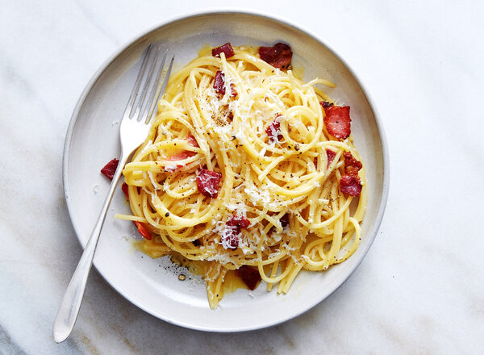

Spaghetti Carbonara

Description
This scrumptious recipe calls upon a few extra egg yolks to give this italian american dish its distinctive rich
flavor. While the emulsification process of the eggs, cheese, and starchy pasta water may seem intimidating to
the novice chef, we've introduced a foolproof method to get you to creamy carbonara heaven.
It doesn't matter if you make this dish on a weekday, weeknight, or as a midnight snack. It's the low effort to
flavor ratio that will keep you coming back for more.
Ingredients
- 2 egg yolks
- 1/4 cup grated parmesan
- 1/3 packet store bought spaghetti
- 2 cloves garlic
- olive oil
- Handful of Pancetta/bacon
- Salt for boiling water
Steps
- Start by bring a quart sized pot of water to a boil. Once boiling, add enough salt to make it taste like sea
water.
- In a separate bowl, whisk together your egg yolks and parmesan until homogenous
- Cook spaghetti according to package directions, ideally about 20-30 seconds shy of al-dente. Make sure to
reserve some pasta water!
- In a pan on low to medium heat, bring some olive oil to a shimmer and saute garlic for 30-60 seconds. Add
your pork product and render some of it's fat out.
- Once your pasta is cooked, transfer it directly to your pan with the garlic and add the parmesan/egg yolk
mixture. Emulsify thoroughly by using tongs to shake the pasta back and forth. Be sure to add more starchy
pasta water if the carbonara is looking dry. Voila!